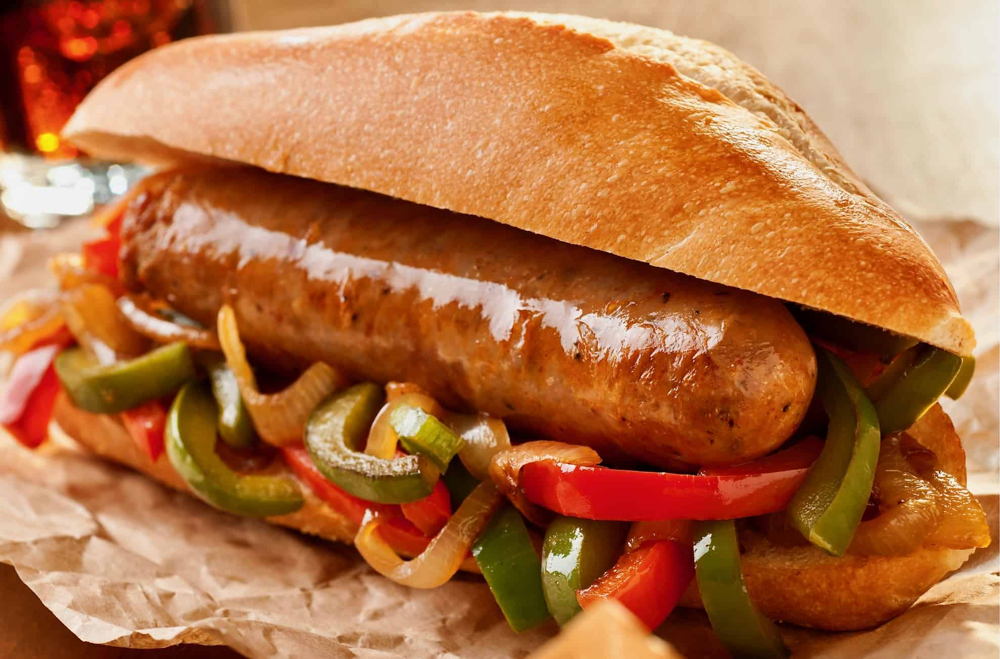

Recipes
Spaghetti with tomato sauce

Ingredients
- Tomato sauce
- Spaghetti
- Salt
- Garlic
- Olive Oil
- Water
- Sugar
Procedure
Prepping the Sauce
If you have freshly prepared tomatoes:
- Slice around 3 cloves of garlic longways
- Put a couple of tablespoons of olive oil in a pot, enough to barely cover the bottom and putn on low medium heat
- Once oil has warmed up a bit, place sliced garlic in the oil
- Wait for the garlic to get a little darker, but be careful not to burn the garlic, or it will skunk the sauce
- Place uncooked sauce in the pot
- Add a few tablespoons of sugar, and a teaspoon of salt
- Let sauce cook for about 20 minutes, stiring frequently
If you have a premade jar of sauce, then you're ready:
Pasta
- If you have a premade jar of sauce, then you're ready
- Fill up a pot more than halfway with cold water
- Let water boil
- Place Spaghetti in boiling water
- Immediately add a few tablespoons of salt
- Stirring frequently, let pasta boil for about 7-8 minutes
- When happy with the texture of the pasta, strain the water
- Add sauce to pasta
- Enjoy
Grilled Cheese Sandwich

Ingredients
- Cheese of choice
- Sliced Bread
- Butter
- Butter the Bread
- Place bread butter-side-down on the frying pan
- Place your choice of cheese between the bread. Mix different types of cheese, double up, Get creative!
- Let the bread get colored, the darker the better (not black)
- Flip the sandwich and let the other side cook
- Enjoy
Italian Sausage and Peppers
Ingredients
- Italian Sausage
- Bread
- Olive Oil
- Your choice of bell-peppers
- Sweet Onion
- Slice a quarter onion longways
- Slice your choice of peppers longways
- Place a couple table spoons of olive oil into a frying pan
- Once the oil heats up a bit, place the sliced onions and peppers
- Wait for colorization of onions and for softening of peppers
- Place sausage on a barbeque, and wait for colorization of sausage
- Once sausage is cooked, place it within a bun, and placing a generous amount of peppers and onions in as well
- Enjoy